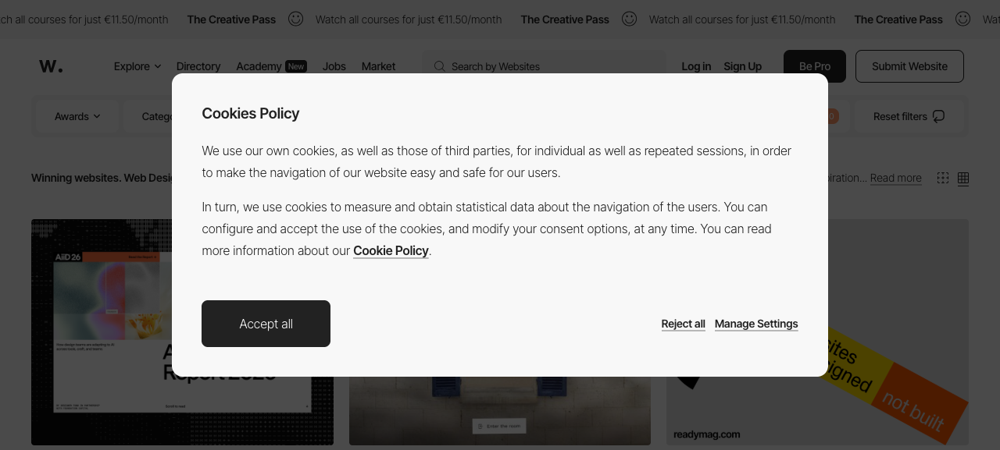
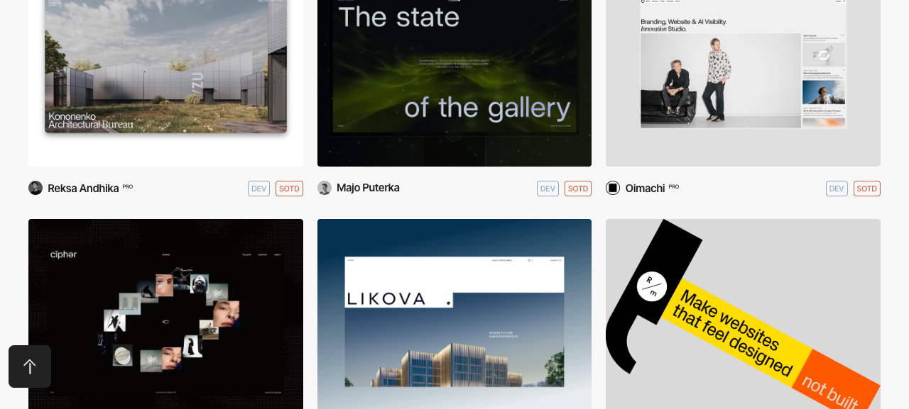
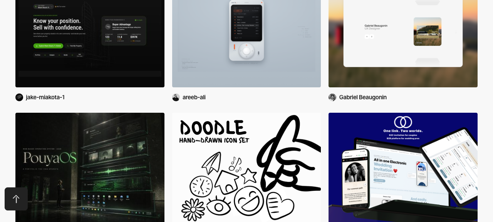
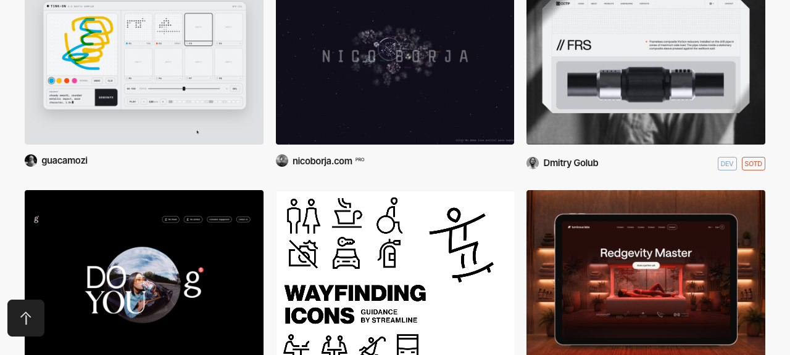
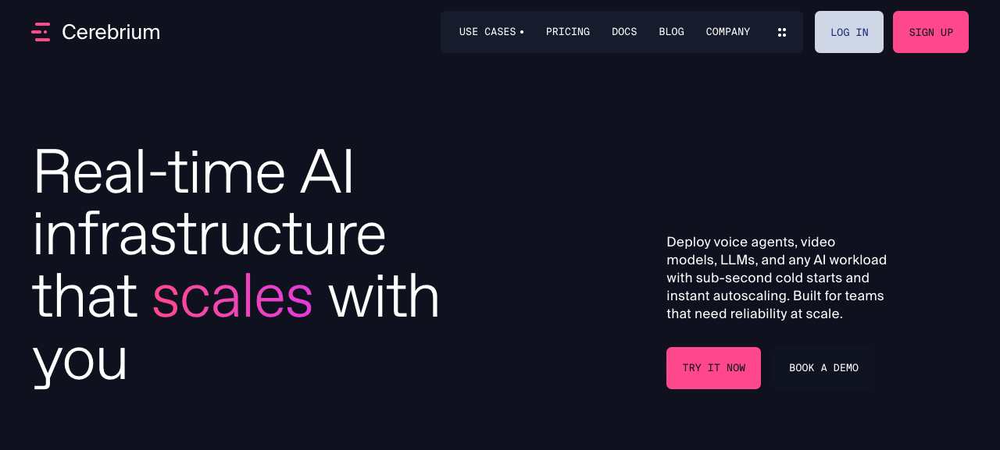
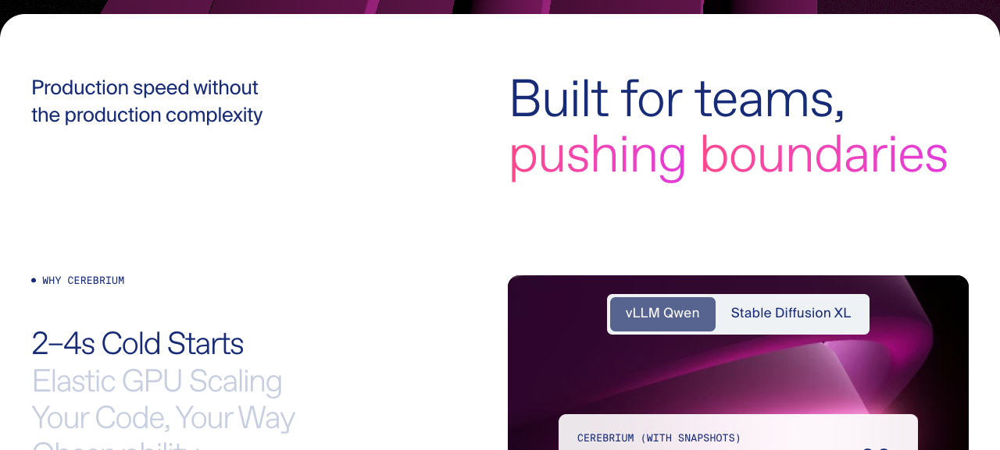

Six captures from a live pass over awwwards.com. Each caption records what the grid actually shows and whether it transfers to this product.

/websites/ — winners grid
White field, tight 3-column grid, mono DEV/SOTD chips, almost no chrome.
The design-award site is itself a dense grid.
TRANSFERS — density is not the enemy of craft.

/websites/developer/
Architecture bureaus, galleries, studio portfolios (Kononenko, Likova, Cipher, Oimachi). The tag means a developer submitted it — not that it was built for developers.
DOES NOT TRANSFER — wrong audience entirely.

/websites/app-style/
Dark UI screenshots floating on soft gradient backdrops inside device mocks. Rewards how you photograph an app, not how it works.
PARTIAL — useful for a landing page, irrelevant to the dashboard shell.

/websites/data-visualization/ — the real reference
guacamozi: a live tool UI — light neutral chrome, tight panel grid, dense micro-labelled
controls, one saturated vector plot carrying all the visual energy. Golub: blueprint/CAD idiom
— grey field, mono annotations prefixed // FRS, callout leader lines. Reads as
engineering document, not marketing.
TRANSFERS — this is the app-UI direction. "Technical instrument / blueprint": mono for every number, label, path and status; colour only as data or severity.

cerebrium.ai — above the fold
Nearest analogue: real-time AI infra for developers, awwwards-winning. Near-black navy with no gradient · oversized light-weight grotesque with one accent word · mono uppercase nav, buttons and eyebrows (the entire "developer" signal, carried by one type choice) · exactly one hot accent, used ~4 times · body copy that states latency numbers instead of adjectives.
COPY THIS — hero formula and type system.

cerebrium.ai — one scroll later
Purple gradient blobs — the precise AI-slop tell the anti-slop-frontend skill flags.
STOP BEFORE THIS. Where Cerebrium puts a purple blob, we put a real streaming session.